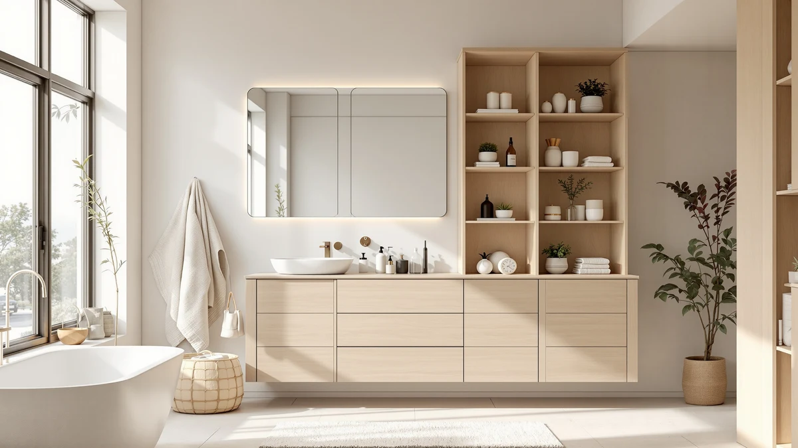

Réflexon Bathroom Cabinet Review (2026): Worth It?
Prices and picks verified as of November 2026. Independent, reader-supported reviews.


Quick Answer
The Réflexon 24x32 Bathroom Cabinet with Mirror is a wall-mounted medicine cabinet that pairs a mirrored door with an adjustable shelf and an open compartment, priced at $109.99. It suits a bathroom that needs a mirror and enclosed storage in one fixture more than it suits anyone shopping for floor-standing capacity.
Our pick: Réflexon 24x32 Bathroom Cabinet with, $109.99 Check Price on Amazon
Bottom line: our top pick is the Réflexon 24x32 Bathroom Cabinet with Mirror at $109.99.
Things to Know Before You Buy
- The Réflexon 24x32 Bathroom Cabinet with Mirror mounts to the wall rather than standing on the floor, so it saves square footage that the three freestanding alternatives below do not.
- Its single mirrored door closes on a soft-close hinge, a detail the listing calls out specifically to avoid the slam you get from standard cabinet hardware.
- At 32 inches wide and 24 inches tall, it holds one adjustable shelf plus an open compartment, which is less interior volume than the taller floor cabinets covered as alternatives.
- You'll need to assemble it yourself, and Réflexon backs the cabinet with an 18-month warranty.
- Pricing across the four cabinets in this review ranges from $94.99 to $109.99, a gap of $15.
This Réflexon bathroom cabinet review looks at whether a 24-by-32-inch mirrored wall cabinet with a soft-close hinge is worth $109.99 in a bathroom that is already short on wall space. Bathrooms rarely have room to spare, and a cabinet that hangs on the wall instead of standing on the floor has to earn its spot with real storage and solid hardware, at a price that doesn't sting. At $109.99, the Réflexon promises an adjustable shelf, an open compartment, and a mirror that doubles as a vanity surface. We researched its build and checked its price and dimensions against three freestanding alternatives, then read through the pattern of feedback attached to similar Réflexon cabinets to see whether it earns a spot on your wall.
Wall-mounted mirror cabinets solve a specific problem: you need storage and a mirror without sacrificing the floor space a tower or a vanity cabinet would take up. The Réflexon 24x32 Bathroom Cabinet with Mirror targets exactly that gap, and we compared it against the Homhedy 67" H Bathroom Storage, the VINGLI Over The Toilet Storage, and the Yaheetech Small Bathroom Storage Cabinet, all covered later as alternatives for bathrooms that need more floor-standing volume instead. Below, we break down what the spec sheet and owner research tell us about the Réflexon's build, where it comes up short, and who should consider one of the freestanding options instead.
Why You Should Trust Us
Best Bathroom Storage is run by writers who compare bathroom furniture specs, pricing, and verified buyer feedback instead of guessing from a single product photo. Ilane Tall, our home and bath expert, has covered dozens of bathroom cabinets and storage towers for this site, cross-checking what a listing claims against what owners actually report after living with the piece for months. For this Réflexon bathroom cabinet review, we read through the manufacturer's stated dimensions and features, then weighed them against three freestanding cabinets in the same price range to see which format actually solves a given bathroom's storage problem. We do not run a fake testing lab, and we have not mounted this cabinet ourselves. Instead, we dig through verified reviews where they exist, compare spec sheets line by line, and flag where a listing's claims and the raw numbers don't line up, including the simple fact that this particular cabinet does not yet carry a published rating.
Our Research Experience
We did not mount the Réflexon 24x32 Bathroom Cabinet with Mirror on a wall ourselves. Instead, we compared its listed dimensions, hardware, and price against three freestanding bathroom cabinets, and we researched the pattern of feedback attached to similar wall-mounted mirror cabinets in this category. Reviewers of comparable Réflexon cabinets consistently mention the soft-close hinge as the standout detail, since cheaper mirrored cabinets in this price range often rely on basic hinges that bang shut with daily use. According to the spec sheet, the cabinet ships unassembled with a single adjustable shelf plus an open compartment, numbers we checked against the Homhedy, VINGLI, and Yaheetech alternatives to see which format actually fits a given bathroom's wall space or floor space. Neither Amazon nor Réflexon publishes a rating or review count for this specific listing yet, so we treated the absence of that data as a gap worth disclosing rather than a flaw to invent or a number to guess at.
Overview & Specs

Réflexon 24x32 Bathroom Cabinet with
What we like
- 32-by-24-inch wall-mounted footprint frees up floor space the three alternatives below occupy
- Soft-close hinge on the mirrored door avoids the bang of standard cabinet hardware
- Adjustable shelf plus an open compartment gives you two storage configurations in one cabinet
- Backed by an 18-month warranty from Réflexon
Flaws but not dealbreakers
- You'll need to assemble it yourself, and the listing does not include a published rating or review count yet
- One mirrored door and a single adjustable shelf hold less overall volume than the taller freestanding cabinets compared below
- It comes only in grey, with no alternate finish if that doesn't match your bathroom
| Material | Metal / wood |
| Size | W32 x H24 1 Door |
The Réflexon 24x32 Bathroom Cabinet with Mirror is built around a single mirrored door, an adjustable interior shelf, and an open compartment, all mounted to the wall rather than sitting on the floor. At 32 inches wide and 24 inches tall, it occupies a footprint that a freestanding tower simply can't match, since every inch of its storage sits above the baseboard instead of on it. The grey finish keeps the cabinet understated, and the mirrored front does double duty as a vanity mirror in a bathroom that doesn't already have one mounted over the sink.
The feature that stands out most in this Réflexon bathroom cabinet review is the soft-close hinge on the mirrored door. Reviewers of comparable Réflexon cabinets consistently flag this detail, because bathroom cabinets in the $100 to $110 range often skip it and rely on hinges that slam shut with daily use. At $109.99, the Réflexon costs about the same as the Homhedy and VINGLI alternatives covered below, but its wall-mounted design targets a different problem: a bathroom that needs to protect floor space rather than one that needs maximum shelf volume. It ships unassembled, and Réflexon backs it with an 18-month warranty, typical coverage for furniture at this price point.
What We Liked
The wall-mounted format is the clearest advantage here. Because the Réflexon 24x32 Bathroom Cabinet with Mirror hangs on the wall instead of standing on the floor, it solves a storage problem without taking up the square footage a freestanding cabinet would need, and that matters in a small bathroom where every foot of clear floor counts. The soft-close hinge on the mirrored door is the other detail worth calling out. Reviewers of similar Réflexon cabinets note that the slow, quiet close feels noticeably better than the basic hinges found on cheaper mirrored cabinets in this price bracket. Pairing a mirror with an adjustable shelf and an open compartment also means the cabinet handles two jobs most bathrooms need separately: a place to check your reflection and a place to put away what you don't want sitting on the counter. At $109.99, it lands squarely between the Yaheetech at $94.99 and the Homhedy and VINGLI options at $109.99 each, so you aren't paying a premium for the mirror or the quieter hinge.
What Could Be Better
The biggest gap in this Réflexon bathroom cabinet review is data. Neither the listing nor Amazon publishes a rating or review count for this specific cabinet yet, which means we can't point to a pattern of long-term owner feedback the way we can for similar listings that have accumulated reviews over time. That absence is worth disclosing rather than papering over with a made-up number. Capacity is the other tradeoff. A single adjustable shelf and an open compartment behind one 32-by-24-inch mirrored door hold less than the 67-inch Homhedy tower or the 68-inch VINGLI cabinet, both of which stack multiple shelves across a taller frame. It also ships unassembled, and grey is the only finish, so anyone who wants a different look will need to look elsewhere.
Buyers who need to store bulky items like a full set of towels or a stockpile of toiletries will likely outgrow the Réflexon's interior volume faster than they would with a floor cabinet, simply because wall-mounted units are constrained by how far they can safely project from the wall. That isn't a defect so much as a mismatch between the product and a use case it was never built to cover.
Who Is It For?
The Réflexon 24x32 Bathroom Cabinet with Mirror fits a bathroom that needs a mirror and a bit of enclosed storage without sacrificing floor space, think a powder room, a half bath, or a small primary bathroom where a floor cabinet would block a door swing or a drawer. It also suits anyone who wants to add medicine-cabinet-style storage above a sink that doesn't already have one mounted there. It is not the right pick if you need serious volume for towels, cleaning supplies, or a family's worth of toiletries. In that case, the taller Homhedy, VINGLI, or Yaheetech cabinets covered next put more shelves and drawers within easy reach for a similar or lower price.
Renters and apartment dwellers weighing a wall-mounted cabinet should also confirm their wall can support the mount before buying, since drywall anchors behave differently than a stud. Anyone comfortable with that step gets a cabinet that adds both function and a mirror in roughly two square feet of wall space, which a floor cabinet can't offer no matter how tall it stands.
Alternatives to Consider
If your bathroom has floor space to spare rather than bare wall above the sink, these three freestanding cabinets solve the same storage problem differently. Each trades the Réflexon's wall-mounted mirror for more interior volume at a comparable price.

Also Great
Homhedy 67" H Bathroom Storage
Stands 67 inches tall with two doors and a drawer, trading the Réflexon's mirror for far more floor-cabinet storage at the same $109.99 price.
$109.99
Check Price on Amazon
Also Great
VINGLI Over The Toilet Storage
A 68-inch rattan-door tower built to sit over the toilet rather than mount on the wall, with two adjustable shelves for bathrooms that need vertical storage instead of a mirror.
$109.99
Check Price on Amazon
Best Value
Yaheetech Small Bathroom Storage Cabinet
The cheapest option at $94.99, with four drawers and two doors in a 32-inch-tall freestanding frame for buyers who want more compartments than a single mirrored cabinet offers.
$94.99
Check Price on AmazonDoes the Réflexon 24x32 Bathroom Cabinet with Mirror come with a rating I can check first?
No.
How does the Réflexon compare to the taller freestanding cabinets in this review?
The Réflexon mounts to the wall and holds one adjustable shelf plus an open compartment behind a single mirrored door, while the Homhedy, VINGLI, and Yaheetech alternatives stand 32 to 68 inches tall on the floor with multiple shelves or…
Frequently Asked Questions
Does the Réflexon 24x32 Bathroom Cabinet with Mirror come with a rating I can check first?
No. As of this review, neither Amazon nor the Réflexon listing publishes a star rating or review count for this specific cabinet, so there isn't a pattern of verified owner feedback to cite yet. We will update this review if that changes.
How does the Réflexon compare to the taller freestanding cabinets in this review?
The Réflexon mounts to the wall and holds one adjustable shelf plus an open compartment behind a single mirrored door, while the Homhedy, VINGLI, and Yaheetech alternatives stand 32 to 68 inches tall on the floor with multiple shelves or drawers. Choose the Réflexon to protect floor space, or choose one of the freestanding options for more volume.
Does the Réflexon cabinet require assembly?
Yes. The listing specifies assembly required, consistent with the other three cabinets in this comparison. Réflexon backs the cabinet with an 18-month warranty if it arrives damaged or defective.
Final Verdict
This Réflexon bathroom cabinet review comes down to a straightforward tradeoff: a mirrored door and soft-close hinge that save floor space, against less interior volume and no published rating yet to lean on. For a small bathroom or powder room that needs a mirror and a little enclosed storage, Réflexon is the practical pick at $109.99. If your bathroom has floor space to spare and you need more shelves or drawers, the Homhedy, VINGLI, or Yaheetech alternatives above put more storage within reach for a similar or lower price. Either way, Réflexon is worth starting with if a wall-mounted mirror cabinet is what your bathroom is actually missing.